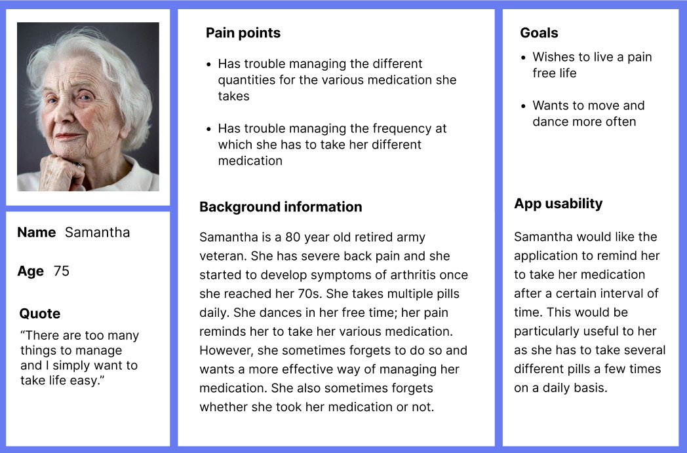
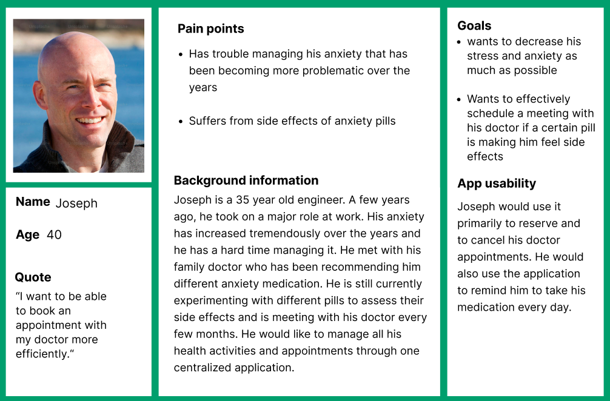
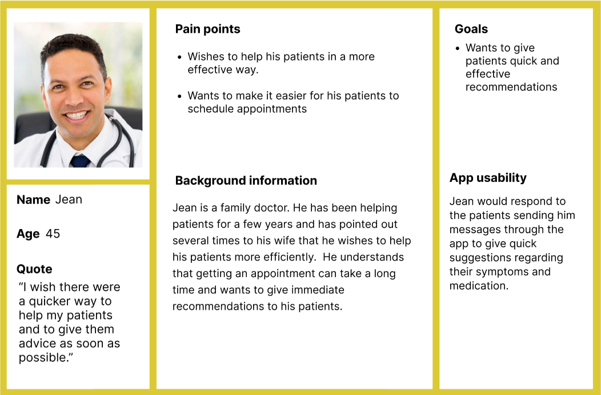
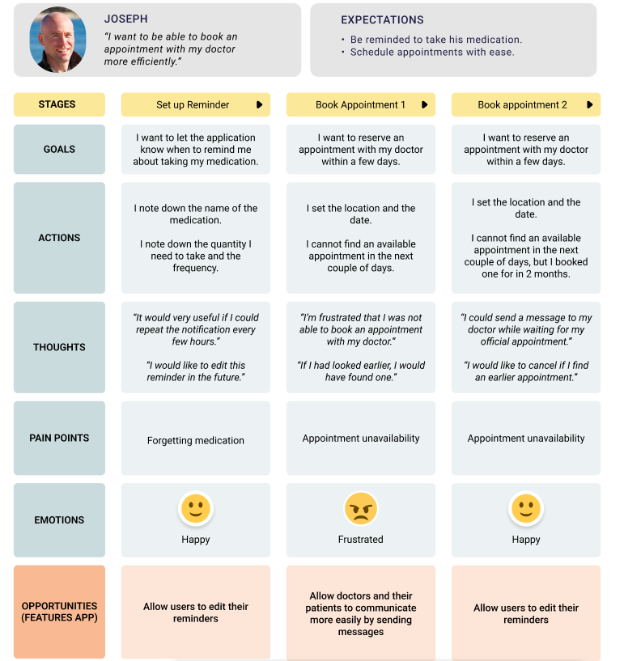
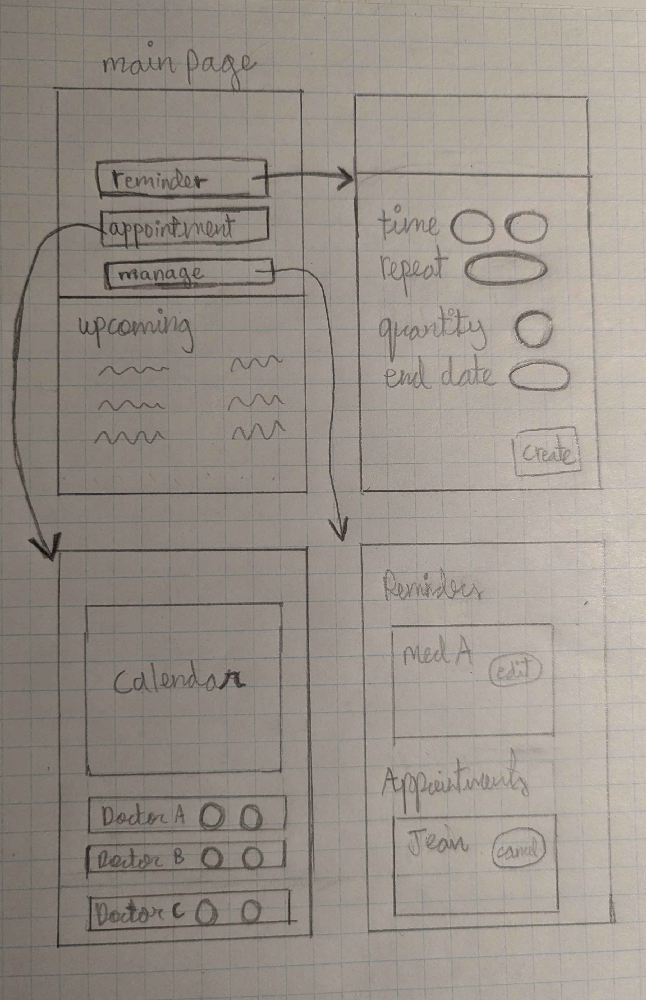

Super Health App
Published on February 21, 2025
Written by Anthony El-Khoury
ABSTRACT
Health is undoubtedly the most important aspect of your life.
Taking proactive steps by monitoring your physical and mental health
is necessary to prevent diseases from affecting you; even the healthiest
people get sick and need to visit doctors and take medication.
This unfortunate reality has been reminded to us in recent years
with the pandemic. Managing and monitoring your health is indeed a
difficult task and requires a lot of time and effort. In fact, this
is precisely what the following blog discusses: it details the difficulty
of monitoring your health, describes the current software solutions and
proposes a new user experience for a super health application.
USER RESEARCH
To understand patient needs, it is imperative to do research and to conduct a survey.
The most optimal way of doing so would be to partner with medical clinics and
hospitals directly. The idea would be for them to ask the patients waiting to be
called in to fill in a questionnaire. This would directly target the potential
consumers of the proposed mobile application. This is highly effective and
constructive.
Another way I would go about researching the users would be to host a survey on Google forms and to send it to my friends and my family. However, this method isn’t as effective as the previously mentioned one. I’ve come up with a few questions for the questionnaire. Since the topic discusses medical issues, I would firstly remind them that the survey is completely anonymous. I would then proceed with the following simple yet effective questions.
Another way I would go about researching the users would be to host a survey on Google forms and to send it to my friends and my family. However, this method isn’t as effective as the previously mentioned one. I’ve come up with a few questions for the questionnaire. Since the topic discusses medical issues, I would firstly remind them that the survey is completely anonymous. I would then proceed with the following simple yet effective questions.
- What is your age range? (MCQ)
Below 18
18 to 50
Above 50
- Do you take medication on a regular basis? (MCQ)
Yes
No - How often do you forget to take your medication? (MCQ)
Never
Sometimes
Often
Always - How do you track the medication you take? (Short answer)
Enter Answer … - Do you think it's effective? (MCQ)
Yes
No - Do you frequently have doctor appointments? (MCQ)
Yes
No - How do you currently book appointments? (Short answer)
Enter Answer … - Do you think it's effective? (MCQ)
Yes
No - Do you think there should be an easier way to communicate with your doctor? (Long answer)
Enter Answer …
PROBLEM STATEMENT & CURRENT SOLUTIONS
Maintaining your health is extremely difficult and takes a lot of commitment.
This is the main problem various software applications try to solve. Many mobile
reminder applications exist and have notifications and reminders to take medication.
They have demonstrated their usefulness in many experiments. For example, a study
was conducted that reveals, with 95% confidence, that patients who used a tracking
application were more likely to adhere to their medication than those who didn’t [1].
Other studies such as [2] arrive at the same conclusion. For appointment reservations
in Quebec, RVSQ, and ClicSante are frequently used; they allow patients to book
consultations with doctors [3]. These applications fulfill their goal; however, they
don’t consider the frequent unavailability of free appointments which has become a
serious issue over the years and has led to an overall negative experience [3]. This
issue is becoming worse and these applications are not designed to tackle this issue
which stems from having a free health care system. It could be beneficial for patients
to have a quicker and more efficient way of communicating with doctors. There is truly
a need for an application that centralises many features that make it easier for patients to track their health.
PERSONAS



JOSEPH'S JOURNEY

TEMPLATE - https://www.figma.com/community/file/1167700722702284382
WIREFRAMES

PROTOTYPE
MED REMINDER

BOOKINGS APPOINTMENTS

MESSAGE DOCTOR

MANAGE REMINDERS

MANAGE APPOINTMENTS

USABILITY TESTING
I would make a few people that I know use the prototype.
I would then ask them to answer two main questions in a written format:
they would need to detail their experience using the application.
They would express their opinions on what they think is effective
in the design and in the user experience and what they think could
be improved. I asked a few friends for their opinion on my prototype.
They suggested a few changes such as making a vertical line in the
"create reminder" and "schedule meeting" buttons in order to improve the user experience.
REFLECTION
My proposed application fulfills the needs of patients.
The medication reminder feature is present and efficient. You can set
the reminder as "done" and you can track your progress by clicking on "view your history".
Furthermore, similarly to current solutions, it is possible to schedule an appointment
with a doctor at a specific location. You additionally have the option to send doctors a
message which gives them the opportunity to answer your questions on your symptoms and
medication. This facilitates the communication between patients and their doctors and is my attempt at solving the problem.
The suggested application shows that effective user-centric design principles were applied.
First, the two main functionalities are clearly shown to the user with the large white buttons,
making it easy to use the application. Furthermore, it provides good feedback and informs you
what you can and can’t do. For example, when creating a new reminder, the "create" button is
greyed out until the patient fills all the necessary information. The metal blue color is
reminiscent of doctors and their apparel; it gives patients reassurance and reminds them of
the goal of this application. Moreover, it has been designed with accessibility in mind. The
contrasting colors demonstrated in the mockups are certainly helpful for people with visual
limitations to differentiate the different buttons and features.
REFERENCES
[1] K. Santo et al., ‘Medication reminder applications to improve adherence in coronary heart disease: a randomised clinical trial’, Heart, vol. 105, no. 4, pp. 323–329, Feb. 2019, doi: 10.1136/heartjnl-2018-313479. Available: https://pubmed.ncbi.nlm.nih.gov/30150326/
[2] T. L. Hayes et al., ‘A Study of Medication-Taking and Unobtrusive, Intelligent Reminding’, Telemed J E Health, vol. 15, no. 8, pp. 770–776, Oct. 2009, doi: 10.1089/tmj.2009.0033. Available: https://pmc.ncbi.nlm.nih.gov/articles/PMC2998278/
[3] C.-É. Blais-Poulin and J.-H. Roy, ‘Dossier: Clic Santé | Par ici le privé (4 articles)’, La Presse, Dec. 10, 2024. Accessed: Feb. 20, 2025. [Online]. Available: https://www.lapresse.ca/actualites/sante/clic-sante/par-ici-le-prive/2024-12-10/rvsq-et-bonjour-sante/autres-plateformes-autres-problemes.php
[2] T. L. Hayes et al., ‘A Study of Medication-Taking and Unobtrusive, Intelligent Reminding’, Telemed J E Health, vol. 15, no. 8, pp. 770–776, Oct. 2009, doi: 10.1089/tmj.2009.0033. Available: https://pmc.ncbi.nlm.nih.gov/articles/PMC2998278/
[3] C.-É. Blais-Poulin and J.-H. Roy, ‘Dossier: Clic Santé | Par ici le privé (4 articles)’, La Presse, Dec. 10, 2024. Accessed: Feb. 20, 2025. [Online]. Available: https://www.lapresse.ca/actualites/sante/clic-sante/par-ici-le-prive/2024-12-10/rvsq-et-bonjour-sante/autres-plateformes-autres-problemes.php